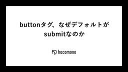

hacomono TECH BLOG
https://techblog.hacomono.jp/
フィットネスクラブやスクールなどの顧客管理・予約・決済を行う、業界特化型SaaS「hacomono」を提供する会社のテックブログです！
フィード

buttonタグ、なぜデフォルトがsubmitなのか
hacomono TECH BLOG
どうも hacomono UX 部のもんちゃん（門田）です。もんたではなくかどたです。 モンハンワイルズをやりたいが果たしてやる時間が取れるのか？が2025年3月時点の悩み。 Web 開発をしていると大なり小なり「ん？なんか動きがおかしくないか？」と日々誰しもがぶつかったことがあると思います。そんなところに着目し、まず今回は <button> タグの type 属性についてちょっと改めて振り返ってみようと思います。 そもそも、なぜ type のデフォルトが button じゃなくて submit なんだというところに注目していきます。 type 指定をしない = submit すごいシンプルな…
5日前

CSS だけでゲームを作ってみた
hacomono TECH BLOG
はじめに 皆さま、こんにちは！ hacomono でエンジニアをやっております「とんと」と申します。 普段の業務ではフロントエンドからバックエンドまで幅広く実装を担当していますが、当の本人はフロントエンドが好きです。 特に CSS が大好きで、街中の看板やロゴを見ると頭の中で CSS を組んだりします。 そんな CSS 大好きな私がお送りする今回のテックブログでは、「 CSS だけでゲームを作ってみた」というタイトルでやっていこうと思います。 割とネタ要素に寄っているので、気軽にみていただければと思います！ 作ったもの 今回は「風船割りゲーム」というものを作ってみました。 以下の Codepe…
12日前
もう怖くないPSE！電気用品安全法の基礎知識と対策をまとめてみた
hacomono TECH BLOG
はじめまして、hacomonoのIoT部に所属するTaroです。 hacomonoはSaaSの提供を生業とする企業ですが、SaaS業界では珍しくIoT機器の製品開発から製造まで行っております。IoT機器を含む電気製品は品質や性能にフォーカスが当たりがちですが、国ごとに制定された法律も切り離すことができません。 私は電気製品に対する認証業務に従事した経験から各国の法規制には詳しく、hacomonoでも電気用品安全法に言及する案件があったため本投稿のきっかけとなりました。 本投稿では、日本における電気製品に対する法律「電気用品安全法」に着目し、これから電気製品を輸入・販売していきたい人向けに何をす…
19日前
内部品質の計測と活用の取り組み
hacomono TECH BLOG
こんにちは！hacomono QAのモーリーこと森島です。 本記事ではプロダクトの内部品質の計測と活用をテーマにお届けします。 はじめに hacomonoでは、QAエンジニアが取り組む品質保証の活動として製品プロセス・外部品質・利用時の品質の評価・改善を実施してきました。 hacomonoも年月を重ねさまざまな機能を有するようになり、全体を把握していくことも難しいボリュームになってきました。時には想定しない影響により欠陥を市場に流出させてしまうこともありお客様へも、社内に対しても申し訳ない気持ちになる場面もあります。 「想定しない影響」という点につき、プロダクト内部(ここではプログラムコード)…
1ヶ月前
信頼性を保つ方法を考えてたらインシデントレスポンスの改善を進めてた話
hacomono TECH BLOG
どうも、SREチームのリーダーを務めておりますkoskohei( @hukuroukk )と申します。 普段は SRE チームのマネジメント、また施策の実施をメンバー同様行いつつ、組織の横断的な課題のために自分に鞭を打ちながら日々奔走しております。鞭はそこまで痛くないやつを使っています。自分に甘いので。 さて、今回ブログには直近行っていましたインシデントレスポンス改善の取り組みについて紹介しようと思い筆をとりました。もしよければお付き合いください。 サービスの信頼性を損なう時はどんな時か。 サイト信頼性エンジニアリング（SRE）において、以下記事でも語られていることですが、現状のサービスの信頼…
1ヶ月前
ぐれっぷ力、それはぐぐり力の次にくるもの。
hacomono TECH BLOG
こんにちは。hacomono 開発チームでエンジニアをやっています おくのっち です。 2023年6月に入社してはや１年と半年が経ち、現在は「データやサービスと hacomono を繋げる」事に取り組んでいます。 今回はそんな日々で私を支えてくれるツール(grep)について、ご紹介させていただきます。 あしたのために（その１）grep エンジニアには必須の能力ぐぐり力があります、それに続く力「ぐれっぷ力」。 ※以降ぐれっぷ力をgrepコマンドを使いこなす事としています。 エンジニアの基礎の能力にぐれっぷ力があります。 ぐぐり力ほどの目覚ましい効能はありません。ですが、後のチャンピオン矢吹丈も最…
1ヶ月前
RSGT2025に初参加しました
hacomono TECH BLOG
こんにちは、hacmonoでエンジニア兼開発プロセスの改善などの 取り組みをしているタクローです。 今回hacomonoがRSGT2025にゴールドスポンサーとして参加させていただき 私もスポンサーチケットを活用して念願だったRSGTに初めて参加することができましたので その感想をレポートとしてまとめたいと思います。 Day0 まず、これからRSGTに初めて参加する方には、ぜひDay0に参加することをおすすめします。 Day0で行われたのはRSGTを楽しむ仲間を増やし、有意義な場にするため グループに分かれて記者会見ワークショップを行うという内容だったのですが 実際、当日は既に知り合いの状態の…
2ヶ月前
「車輪の再発明」は悪なのか？：エンジニアとしての成長と寿命を延ばす学びの道しるべ
hacomono TECH BLOG
こんにちは、リアーキテクチャ＆イネーブルメント部のjunです。 普段はフレームワーク寄りの機能やライブラリの開発、パフォーマンスチューニング、リファクタリングなどなどプロダクトの土台を支える役割を担当しています。 今回は、 「車輪の再発明」は悪なのか？：エンジニアとしての成長と寿命を延ばす学びの道しるべ といった重みのあるタイトルになってはいますが、そんな大層なものではなくあくまで私の個人的な考えとなりますのでご了承ください。 「車輪の再発明」は悪なのか？ この問いはエンジニアの間でしばしば議論になります。 効率を重視する現場では「既存のツールやライブラリを活用しろ」という声が多いでしょう。 …
2ヶ月前
東京Ruby会議12🕊️にhacomonoがGoldスポンサーとして協賛します！
hacomono TECH BLOG
こんにちは！株式会社hacomonoの Engineering Office でアシスタントをしているみーこです。 1月18日に開催されるイベント、東京Ruby会議12についてのお知らせです。 東京Ruby会議12🕊️とは？ 東京Ruby会議12は、プログラミング言語Rubyを使ったソフトウェア開発について議論する地域Ruby会議です。 東京圏の方を中心にRubyistが一堂に会する、Rubyでのソフトウェア開発・運用などの発表を中心とした知的好奇心が刺激されるカンファレンスです。 イベント概要 日程 ▶ 2025年1月18日（土） 開催方法 ▶ オフライン開催 会場 ▶ 横浜市鶴見区民文化セ…
2ヶ月前
Regional Scrum Gathering Tokyo 2025 にhacomonoがGOLDスポンサーとして協賛します！
hacomono TECH BLOG
こんにちは！株式会社hacomonoの Engineering Office でアシスタントをしているみーこです。 1月8日〜10日に開催されるイベント、Regional Scrum Gathering Tokyo 2025 についてのお知らせです。 Regional Scrum Gathering Tokyo 2025 とは？ Regional Scrum Gathering Tokyo の運営母体である一般社団法人スクラムギャザリング東京実行委員会は、スクラムを実践する人が集い垣根を超えて語り合う場を提供するという目的にコミットしています。 今回の Regional Scrum Gathe…
2ヶ月前
QRコードをかざすのは難しい
hacomono TECH BLOG
この記事は hacomono advent calendar 2024 の24日目の記事です こんにちは。hacomono 新規事業開発室に所属している teru です。モバイルエンジニアとしてモバイルアプリの開発をメインで担当しています。 健康維持やリフレッシュを目的として10年間以上ジム通いを続けています。今年は週2〜3回ペースでジムに通ってきましたが最近寒さが厳しく週2回を維持するのが精一杯な状況のため、寒さに負けないよう気持ちを引き締めていこうと思っています。 はじめに hacomono では お客様が店舗をご利用される際、店頭に設置された iPad にメンバーサイト上に表示されるQR…
3ヶ月前
Slack のCustom functionで外部API連携をやってみた
hacomono TECH BLOG
この記事は hacomono advent calendar 2024 の23日目の記事です こんにちは、hacomonoの開発基盤組織でインターンをしているドラゴンです。 hacomonoのインターンでは、社内のエンジニアや他業種の方の業務効率化のため社内ツールを開発しております。その中で、Python for Slack SDKを活用し、Slack ワークフローや Custom functionによる外部API連携の実装に挑戦する機会がありました。その際にCustom functionのドキュメントが少なく、自分では理解に手間取ってしまいました。 そのため、設定からCustom funct…
3ヶ月前
フロントエンドのテストコードに関するスキトラをモブプロで行った話
hacomono TECH BLOG
この記事は hacomono advent calendar 2024 の21日目の記事です こんにちは。開発本部 UX 部の yasu です。 最近はクロストレーナーという効率的に有酸素運動（全身運動）ができるマシンにハマっていて、ジムで Netflix を見ながら楽しくカロリー消費に励んでいます。 直近では海外ドラマ「プリズンブレイク」全シーズンと日本の「六本木クラス」を見ました。 はじめに この記事では、UX 部と CTO 室リアーキテクチャ＆イネーブルメント部が主体となって進めていた、フロントエンド（Nuxt で書かれたコンポーネント）のテストコード実装に関するスキルトランスファー（ス…
3ヶ月前
テストコード追加とリファクタリングでhacomonoのフロントエンド実装と仲良くなる
hacomono TECH BLOG
この記事は hacomono Advent Calendar 2024 20日目の記事です。 はじめに こんにちは。UX部エンジニアのがーみーこと石上（@gaaamii）です。最近、With Wellness *1 というありがたい制度を活用してジムで筋トレを始めました。たくさん運動して、おいしくラーメンを食べたいと思っています。 本記事では、hacomonoの1つのプロジェクトにおいて、私がフロントエンドテストコード追加とリファクタリングを通してhacomonoのフロントエンド実装の理解を深めた体験について書きます。機能の当初の実装者でなく改修に関わっていない身でも、そこへテストコードを書い…
3ヶ月前
リリースって誰のため？hacomonoサポートが考える“準備”の本質🤝〜未来のリリースにもっとワクワクするために〜
hacomono TECH BLOG
この記事は hacomono advent calendar 2024 の19日目の記事です みなさん、こんにちは🙌 hacomonoでサポートOpsをやっています。あやねと申します🍵 はじめに 本題に入る前にちょっとだけアイスブレイクです🫖 自分のこと👩 2024年6月にhacomonoに入社し、サポートOpsを担っています。 これまでの社会人生活では、エンジニアをしたり、オフィスの立ち上げをしたり、DevRelをしたりしていました。 ファーストキャリアのエンジニア時代にゆかりのあった”サポート”というドメインでCXを科学したい！と思い、hacomonoにJoinしました🏃♂️💨 haco…
3ヶ月前
分散システムにおける一貫した時刻の取り扱いの課題と解決策 - Spanner TiDB CockroachDBに学ぶ
hacomono TECH BLOG
この記事は hacomono advent calendar 2024 の18日目の記事です 今年9月にhacomonoにJOINし、基盤本部というところで今後のhacomonoのアーキテクチャ設計をしている @bootjp と申します。分散システムが好きです。 hacomonoも昨今のWebサービスの例にもれず、分散システム化しています。 そしてより高い可用性と低い運用コストを目指して新たなアーキテクチャの検討をしています。 今回はその取り組みのなかで、分散システムに関わる難しさというテーマで一貫した時刻の取り扱いの話で記事を書きます。 はじめに 昨今のWebをはじめとしたサービスは一つのサ…
3ヶ月前
TutorialKit と bolt.new でフレームワークを完全理解させる試み
hacomono TECH BLOG
この記事は hacomono Advent Calendar 2024 の17日目の記事です どうも, みゅーとんです 今年は全体的にテックブログの記事執筆をサボっていたせいか, いつのまにか全体の 15% を切ってしまってました. ブログ再起動時点はすごくエンジンかかっていたのですが, どうしたものやら.. TL;DR Vue2 から 3 まで様々な書き方がある状態で, エンジニアの知識差分を埋めて, Vue3 向けのモダンな記法を広めていきたい 新しい記法を覚えるには体系的に学べるほうが学習効率が良い bolt.new で作ったプロジェクトを TutorialKit の template …
3ヶ月前
プロダクトエンジニアとしての観点を詰め込んだ開発設計書のテンプレートを公開します
hacomono TECH BLOG
この記事は hacomono advent calendar 2024 の16日目の記事です こんにちは、hacomonoのプロダクト開発本部のたつ（X）です。僕からはhacomonoの「プロダクトエンジニア」について今回も書かせてもらいます。前回は「プロダクトエンジニア」という役割を定義しましたというお話」という記事の中で、hacomonoのプロダクトエンジニアの定義やそのスキル・マインドについて紹介させていただきました。 さて本日のお話は、そのプロダクトエンジニアの定義や考え方をどのように浸透させていくか、育成していくかという視点からhacomono社内での取り組みの一つである開発設計書の…
3ヶ月前
実践SLO: Datadogを使ったSLO監視の勘所
hacomono TECH BLOG
この記事は hacomono advent calendar 2024 の15日目の記事です はじめに こんにちは。SRE部のiwachan(@Diwamoto_)です。 hacomonoに入ってもうすぐ1年が経とうとしています。 記事を書くにあたって、去年と今年でどのくらい活動が変わったかをGithubのContributionの表で調べてみました。 2023年は前職でBitbucketへのコミットだったので記録はありませんが、 2024年はhacomonoに来て最初の年で、ほとんどの時間コードを書いて、書いていない時間もコードを書くためにいっぱい時間を使えました。 さて今回の記事ですが、前…
3ヶ月前
ゼンレスゾーンゼロのWEBサイトがすごい
hacomono TECH BLOG
この記事は hacomono Advent Calendar 2024 の14日目の記事です フロントエンドテックリードのみゅーとんです. ゼンレスゾーンゼロ, リリース以後もだいぶ話題性高くて印象に残ってます. 私はリリース直後からちょくちょく遊んでますが, 何にせよ思うのは・・ カリンちゃんかわいいよね 参考: カリン・ウィクス | 『ゼンレスゾーンゼロ』公式サイト いや, heading タグでわざわざ言う事じゃないですね. ごめんなさい. これはアクセシビリティが良くないですね. heading は強調文字ではありません. 私個人的に, 弱気なキャラって死ぬほど刺さるんですよね. その…
3ヶ月前
eラーニングで変わったhacomonoの新入社員研修 - 半年間の実践から見えてきたこと
hacomono TECH BLOG
この記事は hacomono advent calendar 2024 の12日目の記事です ■はじめに こんにちは。2024年の6月に入社したきっしーです。入社してもう半年も経ったのか…と時の速さを感じてます。 入社したタイミングから、サポート部のナレッジマネジメントグループで働いています。今回は、ナレッジマネジメントグループが今注力している施策について書いてみようかと思います。 ■対象読者 hacomonoのサポート部に興味がある人 eラーニングに興味がある人 ■hacomonoのサポート部って？ hacomonoのサポート部は、全国からフルリモートで勤務しているメンバーで構成されています…
3ヶ月前
2024年IoTチーム開発合宿 - 富士山は白かった
hacomono TECH BLOG
この記事は hacomono advent calendar 2024 の11日目の記事です 1. ご挨拶 2. この記事のテーマ 2.1. 前回の反省 2.2. 合宿の概要 3. 合宿開催 3.1. day 0 3.2. day 1 運動スペースにて交流 成果発表 懇親会 二次会 3.3. day 2 現地視察 解散 4. 合宿を終えて ex. 1. ご挨拶 みなさん、こんにちは。 hacomonoのIoTチームのBackendDevグループに所属しているshiguです。 IoTチームはhacomonoの予約システムと連携したデバイスの開発や運用を行っています。 Web開発が中心の会社かと思…
3ヶ月前
K8sのControllerに入門してみた
hacomono TECH BLOG
この記事は hacomono Advent Calendar 2024 9日目の記事です。 こんにちは！基盤本部プラットフォームグループのかいかいです。 今回初めてアドベントカレンダーなるものに参加してみました。 どんな話題でも OK とハードルを低くしてもらっているので、今回は Kubernetes 周りを学習したことを話したいと思います。 組織での取り組みではなく、個人の取り組みになりますのでご了承ください！ 経緯 私はお家 k8s などを行っており、Kubernetes でできることや利用方法はなんとなくわかってきたのですが、Kubernetes の内部で起きていることまでは理解できてい…
3ヶ月前
(小ネタ) roadmap.sh で自分のスキルを可視化してみる
hacomono TECH BLOG
この記事は hacomono Advent Calendar 2024 の8日目の記事です どうも, みゅーとんです. 最近サボり過ぎて, 私の執筆記事が全体の 15% を下回っていました. (記事執筆時点) 今年は例年の半分しかかけず, なかなか熱量維持つって大変ですね. TL;DR roadmap.sh は特定の技術領域における学習のロードマップを示してくれる アカウント登録すれば, その習熟度合いを管理し共有できる Front-end Roadmap こんな図, 見たことないですかね？ ※ 記事の都合上, 途中で切ってしまってますが・・ Front-end Roadmap と呼ばれる図で…
3ヶ月前
エンゲージメントサーベイを導入した話
hacomono TECH BLOG
この記事は hacomono advent calendar 2024 の6日目の記事です はじめに こんにちは！ 株式会社hacomonoのエンジニアリングマネージャーをしているはまーです。 今年3月にhacomonoに入社して新たな環境でチャレンジを開始することになり、プライベートでは娘（5歳）と息子（2歳）を溺愛し、気がついたらあっという間に半年ちょっとが経過し年末を迎えておりました。正に、光陰矢の如し、時が経つのは本当に早いものです。。。 そんな私がhacomonoに入社してからプロダクト組織で新たにエンゲージメントサーベイを導入したのですが、「なぜエンゲージメントサーベイ？」とか「実…
3ヶ月前
hacomonoにおけるRelease Toggles 実践編
hacomono TECH BLOG
この記事は hacomono Advent Calendar 2024 3日目の記事です。 年の瀬も迫ってまいりましたアドベントカレンダー、読者の皆様におかれましてはいかがお過ごしでしょうか。 リーアキテクチャ&イネーブルメント部に所属しているさいもん（野崎）です。 年々、一年を短く感じるようになり、ついこの間年始だったのになと思うばかりであります。 現在は、既存コードの改善やリアーキテクチャタスクなどに取り組んでおり、テックブログにも以下のような記事を投稿しております。 「緊急で重要」なrenovate, dependabotの更新 リアーキテクチャ&イネーブルメント部を立ち上げました/リフ…
3ヶ月前
hacomonoでのfeature flag導入/検討
hacomono TECH BLOG
この記事は、hacomonoアドベントカレンダー2024の2日目の記事です。 はじめに こんにちは。プラットフォーム部所属のまこたすです。 本記事では、昨年プラットフォームチームで作成した基盤システムの1つであるfeature flagについてご紹介します。 記事は、前編 / 後編で分かれています。前編ではfeature flagについての理論と構築したシステム構築についてご紹介します。後半ではhacomonoアプリケーション側での利用 / 展開などの実践的な内容についてふれます。 本日 / 明日と連続でお送りしますので、どちらも最後までご覧いただけますと幸いです。 feature flagと…
3ヶ月前
hacomono API Ruby 3.3 / Rails 7.1 へのアップデート
hacomono TECH BLOG
この記事は hacomono advent calendar 2024 の1日目の記事です おはこんばんちは。hacomono CTO室/リアーキテクチャ&イネーブルメント部の iwazer です。 2024年アドベントカレンダーの開幕を担当して慌てております（11/28) 今年私が注目してたゲームは FF7 Rebirth くらいでしたが、パルワールドとゼルダの伝説・知恵のかりものが楽しめました。 今はコツコツとドラクエ3リメイクをやっております。オリジナルをやったのは35年前なので完全新作です。楽しいです。 はじめに まずはこれまでの hacomono API の Ruby / Rails…
4ヶ月前
Notionで下書きした記事をはてなブログに自動転写するシステムを開発した話
hacomono TECH BLOG
こんにちは！hacomonoの開発基盤グループでインターンとして活動しているゆーたです。 2024年7月にhacomonoにジョインしました。これまで約2年間、主にアプリケーション開発を担当するインターンやバイトをしていましたが、hacomonoでは開発基盤チームに所属していることもあり、インフラも含めて広く触れる機会をいただいています。 先日、初めてのタスクを完遂したので、今回はその内容を振り返りたいと思います。 TL;DR Notionで管理しているテックブログ記事を、はてなブログへ自動転写するアプリケーションを開発 記事の手動転写による30分〜1時間のリードタイムを、数分に短縮することに…
4ヶ月前
じゃんけんを題材にAWS Step Functionsのハンズオンを実施した話
hacomono TECH BLOG
はじめに こんにちは！ 基盤本部プラットフォームグループのかいかいです。 今回はhacomonoプロダクトチームの社内イベント「9月だョ！全員集合」での出し物で、私が担当したじゃんけんゲームについて紹介させていただきます。 ※注意点として、この記事はじゃんけんを AWS Step Functions で実装することを推奨するものではありませんので、ご承知おきください。 経緯 全員集合イベントでは、コミュニティブースか新機能コンテストのどちらかに参加することができ、我々プラットフォームグループでは、グループの活動を広めることを目的にコミュニティブースに出展することにしました。 楽しんでもらいなが…
4ヶ月前